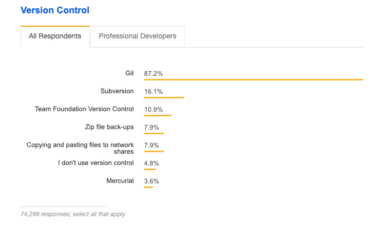

---
---

<section>
  <section>
    <h2>Vorstellung Git</h2>
    
    <aside class="notes">
      Git ist eins von vielen verschiedenen Versionskontrollsystemen.
    </aside>
  </section>
  
  <section>
    <h2>Nutzungsstatistik</h2>
    
    
    
    https://insights.stackoverflow.com/survey/2018#work
  </section>
  
  <section>
    <h2>Beispiele</h2>
    
    <ul>
      <li>Linux</li>
      <li>Apache Foundation</li>
      <li>Free Software Foundation</li> 
      <li>Eclipse Foundation</li>
      <!-- https://git.fsfe.org/ -->
      <li>OpenJDK</li>
      <!-- https://github.com/openjdk/ -->
      <li>NodeJS</li>
      <!-- https://github.com/nodejs -->
      <li>Docker</li>
      <!-- https://github.com/docker -->
    </ul>
  </section>
  
  <section>
    <h2>Historie</h2>
    
    <ul>
      <li>2005 - Erfunden von Linus Torvalds</li>
      <li>Gründung von GitHub</li>
      <li>Microsoft kauft GitHub</li>
    </ul>
  </section>
  
  <section>
    <h2>Vorteile</h2>
    <ul>
      <li>Markführer</li>
      <li>Performance</li>
      <li>kein Server notwendig</li>
      <li>Verfügbar für Windows, MacOS und Linux</li>
    </ul>
  </section>
  
  <section>
    <h2>Nachteile</h2>
    
    <ul>
      <li>Steile Lernkurve</li>
      <li>Windows Support</li>
    </ul>
    
    <aside class="notes">
      <ul>
        <li>Konzepte hinter Git</li>
        <li>Viele Tools</li>
      </ul>
    </aside>
  </section>
  
  <section>
    <h2>Clients</h2>
    
    <ul>
      <li>Kommandozeile</li>
      <li>GUI</li>
      <li>IDE</li>
    </ul>
  </section>
  
  
  

  
</section>
